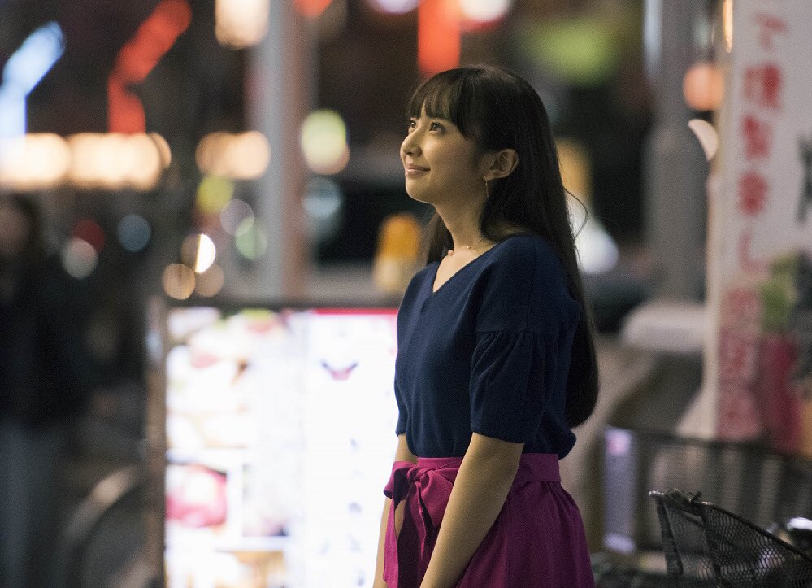
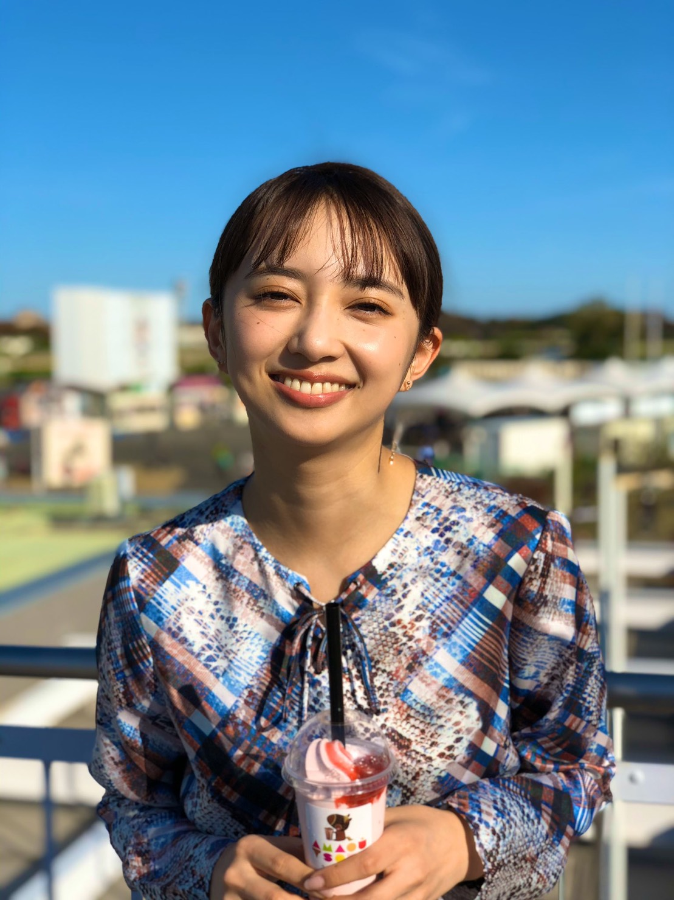
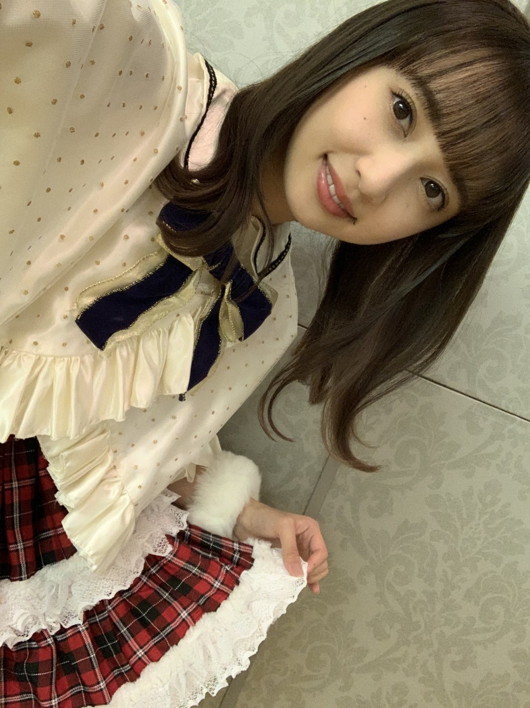
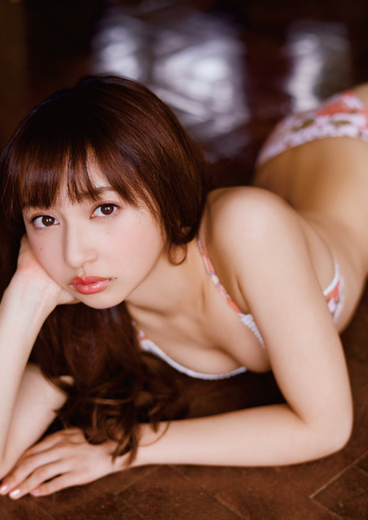
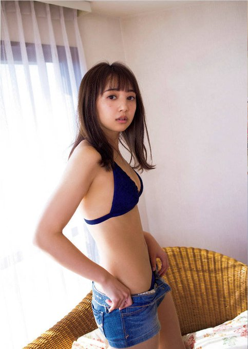
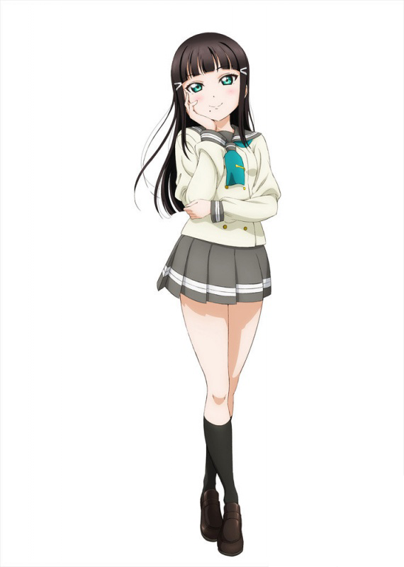
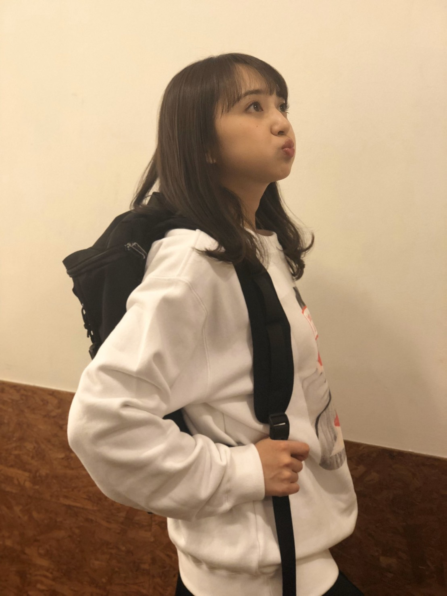
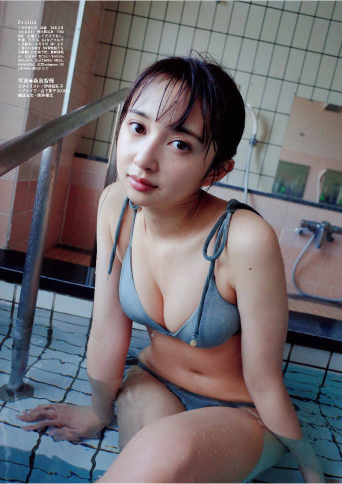
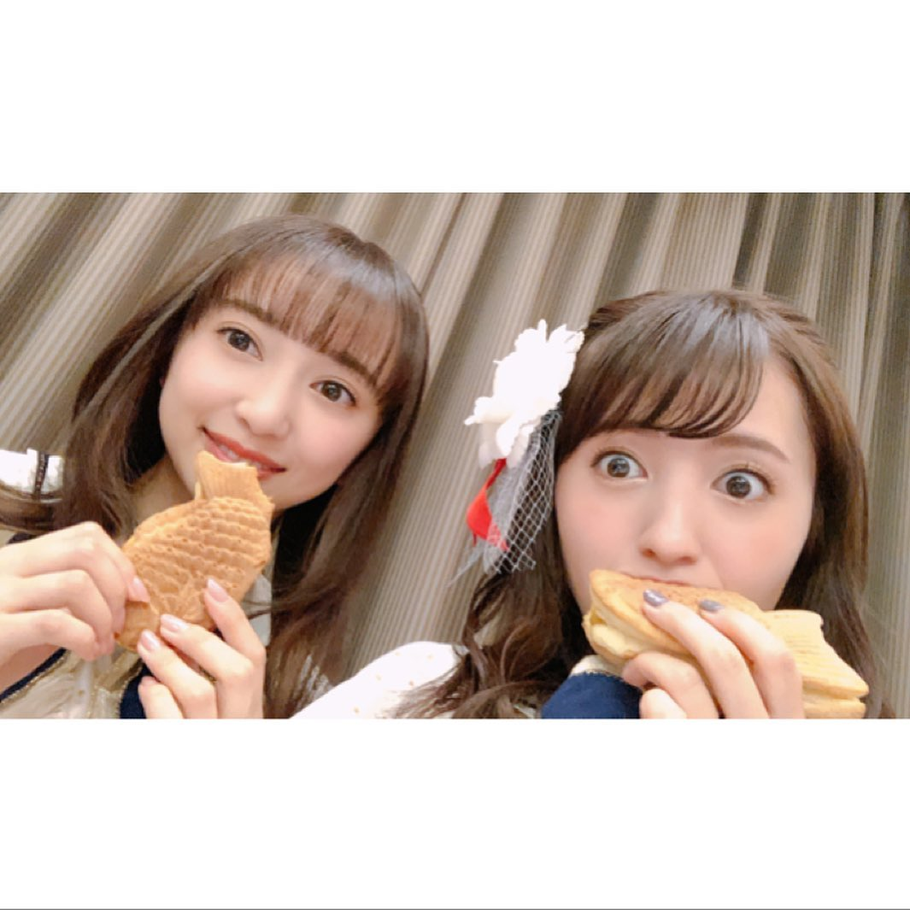
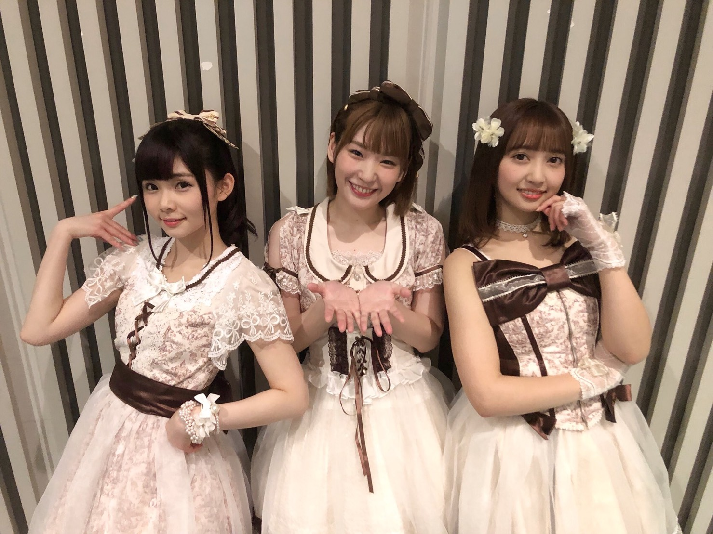

人物介紹

小宮有紗（1994年2月5日－）綽號：Arisha。日本的女性聲優、演員。神奈川栃木縣出身，經紀公司為Box Corporation。
2010年，在初中時期，被現事務所的星探在澀谷街頭看中而出道。 2012年，在特攝劇《特命戰隊Go Buster》中出演，正式演員出道。 2015年，被選為《LoveLive! Sunshine!!》中的黒澤黛雅的聲優，同時是她成為聲優的初次挑戰。也進行了劇中校園偶像團體Aqours的活動。

Aqours團體中的身高擔當（164cm設定是比擁有傲人身材美少女的兩代會長都要高）。
除此之外，有紗還是水團9人中，拍寫真集頻率最高的那位（而且是內衣寫真）

2018年8月3日，首度在台灣舉行個人粉絲見面會。
2019年3月31日，在台灣舉辦第二次見面會。
個性
女校出身，看起來相當優雅正經高冷但出乎意料的在水團生放中多次表演顏藝，為粉絲提供了大量表情素材包。
小學時期曾學過9年左右的古典芭蕾芭蕾舞。 特長為包含芭蕾舞在內的所有舞蹈、繪描插畫。被很多人稱讚擅長畫肖像畫。
喜歡羊肉、馬肉，自稱沒有討厭吃的東西不過不大能吃大塊的滾燙的豆腐。 興趣為歷史，尤其對於幕末時代極感興趣，尤其是在漫畫的影響之下對於土方歲三特別尊敬。

在生日派對上，表示自己的御宅度為30%，雖然會看很多漫畫，但是看的動畫都比較偏門。
特別喜歡動漫作品《銀魂》，甚至和逢田梨香子一起去「大銀魂展」，在《銀魂電影第二部》上映期間，與銀魂和週刊Playboy合作登上了自己Cosplay的銀魂角色寺門通。
此外也很喜歡《頭文字D》
作品
電視動畫
2016


LoveLive! Sunshine!!（黑澤黛雅
2017
LoveLive! Sunshine!! 第二季（黑澤黛雅）2019
宇宙戰艦大和號2202 愛的戰士們（日下部麗） 電視劇與特赦與電影2012

海賊戰隊豪快者 VS 宇宙刑事卡邦 The Movie（Yellow Buster）特命戰隊Go Busters THE MOVIE 保護東京Enetower!（宇佐見陽子 / Yellow Busterr）
假面騎士x超級戰隊 超級英雄大戰（Yellow Buster）
2013
水木茂的怪怪怪的怪談 「砂かけばばあ」（若杉慶子）天國の戀（長澤齋）
2014

孤獨的美食家第四季 第4話（篠）獸電戰隊強龍者 VS Go Busters 恐龍大決戰！ 再見永遠的朋友啊（宇佐見陽子 / Yellow Buster ）
警視廳搜查一課9係第九季 第5話（山村メグ）
2015
銀河奧特曼S 決戰，奧特10勇士 THE MOVIE（阿蕾娜）

2018
你們這些傢伙真麻煩!（一宮數美）2019
Back Street Girls -極道少女-（中村結衣）2020
假面騎士Zero-One（海老井千春）寫真集
夏日記（2012年9月15日、Movic、攝影：Takashi Inoue）ISBN 978-4896018585 有紗（2013年11月25日、鱷魚書社、攝影：熊谷貫）ISBN 978-4847045998 ＜週プレ PHOTO BOOK＞ 小宮有紗「女優と声優の間で。」（2017年4月、集英社、撮影：熊谷貫）